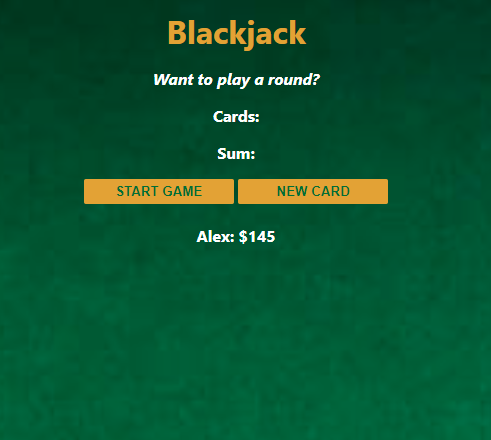

More About Me
In 2014, I completed my Certificate II in Animal Studies. This led to me completing my Diploma of Animal Technology in 2018. The Cert II allowed me to gain employment at the Monash University animal research facility as an animal technician. This combined with the Diploma led to my current position at the Walter and Eliza Hall Insitute. This all adds up to 9 years of experience as an animal technician.
Prior to this, I spent 6 years working in hospitality in various cafes, restuarants, and catering functions around Melbourne. For a full account of my work and study history, please feel free to download my resume using the link below.
I have two ginger cats, Tofu and Fin, and in my spare time I enjoy crocheting and playing video games.
Download my resume
Projects
Passenger Counter

07/05/22
Blackjack
14/05/22
Chrome Extension

08/06/22
Maze
25/07/22
Pokemon Style Game
08/08/22